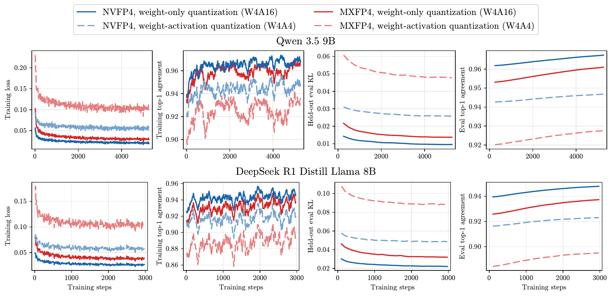
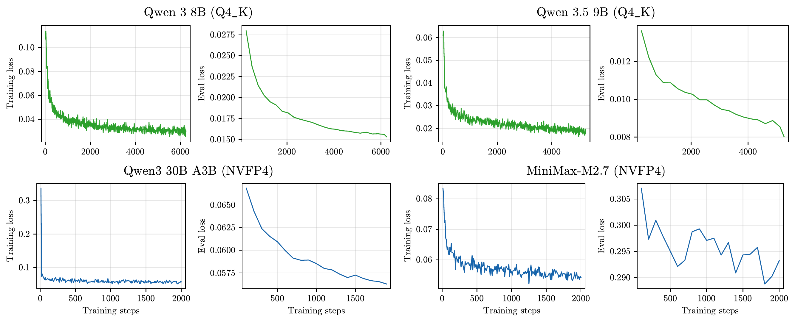
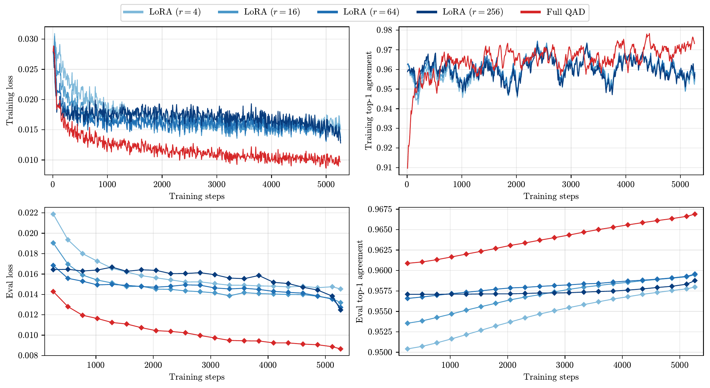
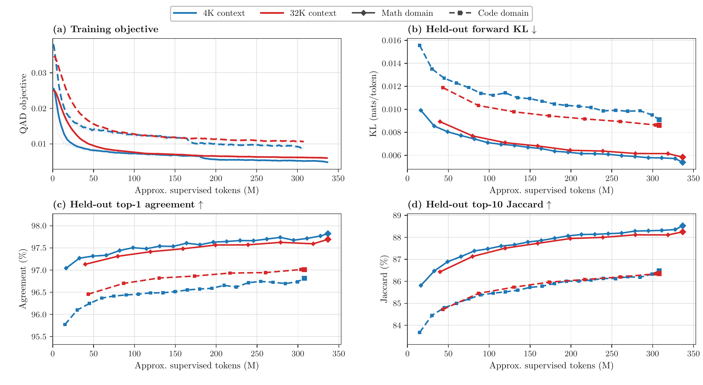
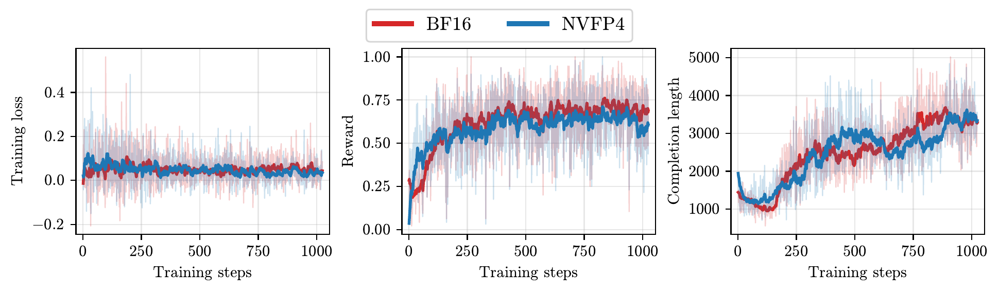

Overview
Train in the format you serve
LLM inference keeps moving to lower precision, and aggressive post-training quantization (PTQ) can cost model quality. QATFactory is an open-source framework for deployment-aligned quantization-aware distillation (QAD) and reinforcement learning (QARL).
It simulates deployment-time quantization while every matrix multiplication runs in BF16, so a model adapts to quantization noise on hardware that lacks the target format: NVFP4 trains on H100 GPUs, which have no FP4 Tensor Cores. It covers NVFP4, MXFP4 and llama.cpp's Q4_K, dense and mixture-of-experts models from 8B to 230B parameters, and full-parameter or LoRA training. Checkpoints export directly to vLLM, SGLang and llama.cpp with no extra lossy conversion and no added inference cost.
Method
One quantization-aware layer, two training modes
Both QAD and QARL build on the same quantization-aware layer. In the forward pass it quantizes and dequantizes weights, and optionally activations, exactly as the serving kernel will. In the backward pass a straight-through estimator updates continuous latent weights.
![(a) Quantization-aware distillation: training data feeds a frozen BF16 teacher and a quantization-aware student; a distillation loss between them updates the student. (b) Quantization-aware reinforcement learning: a low-precision vLLM rollout engine samples rollouts for each prompt, a reward or verifier scores them, and the quantization-aware learner sends its weights back to the rollout engine. Right: inside a quantization-aware layer, latent weights and activations pass through quantize-dequantize into simulated-quantized tensors that feed a BF16 matmul; the straight-through estimator approximates the gradient with respect to the latent weights by the gradient with respect to the simulated-quantized weights.](fig/qatfactory.png)
NumericsDeployment-aligned simulated quantization
Each format implements one quantize-dequantize interface that reproduces the serving format: NVFP4 with E4M3 block scales and an FP32 tensor scale, MXFP4 with E8M0 block scales, and Q4_K super-blocks. Projections that an engine fuses, such as QKV and gate/up, share one scale during training as they do at inference.
QADQuantization-aware distillation
The quantized student matches the frozen BF16 model's token distribution under forward KL, on responses the original model generated for Open Perfect Blend prompts. Training is full-parameter with FSDP or LoRA, where the merged weight is what gets fake-quantized. For mixture-of-experts models, full-parameter QAD trains every expert, and LoRA-QAD merges and quantizes one expert at a time to bound peak memory.
QARLQuantization-aware reinforcement learning
GRPO rollouts run in vLLM on native NVFP4 weights, so the policy that samples is the policy that ships. After each optimizer step the learner packs its quantized weights and syncs them into the rollout engine.
ExportEngine-native checkpoints
The trained latents are packed directly into vLLM compressed-tensors checkpoints for NVFP4 and MXFP4, or into a llama.cpp GGUF for Q4_K. There is no re-quantization and no calibration step after training.
| Format | NVFP4 | MXFP4 | Q4_K |
|---|---|---|---|
| Deployment precision | W4A4 | W4A4 | W4A16, weight-only |
| Element | E2M1 (FP4) | E2M1 (FP4) | Unsigned INT4 |
| Block size | 16 | 32 | 32, in a 256 super-block |
| Scales | Block E4M3, tensor FP32 | Block E8M0 | Block 6-bit, super-block FP16 |
| Bits per weight | 4.50 | 4.25 | 4.50 |
| Engines | vLLM, SGLang | vLLM, SGLang | llama.cpp |
Supported formats. Bits per weight include element codes and scaling metadata.
Key findings
What we learned training in low precision
Every quantized checkpoint below is exported to its engine and evaluated there: vLLM for NVFP4 and MXFP4, llama.cpp for Q4_K. KL divergence to the unquantized model is measured on UltraChat, the Pile and WikiText.
01Does QAD beat post-training quantization across formats, scales and architectures?
Yes. QAD converges stably from 8B to 230B parameters under NVFP4, MXFP4 and Q4_K, and its exported checkpoints score higher and sit closer to the original model than RTN and GPTQ.
On Qwen3.5-9B the gap is 3.5 points under NVFP4 and 9.6 points under MXFP4. The same holds for DeepSeek-R1-Distill-Llama-8B, for the Qwen3-30B-A3B and MiniMax-M2.7 mixture-of-experts models, and for llama.cpp's Q4_K.
| Checkpoint | Qwen3.5-9B, NVFP4 | Qwen3.5-9B, MXFP4 | DS-R1-Distill-Llama-8B, NVFP4 | DS-R1-Distill-Llama-8B, MXFP4 | ||||
|---|---|---|---|---|---|---|---|---|
| Avg ↑ | KL ↓ | Avg ↑ | KL ↓ | Avg ↑ | KL ↓ | Avg ↑ | KL ↓ | |
| BF16 reference | 71.7 | — | 71.7 | — | 49.4 | — | 49.4 | — |
| RTN | 65.4 | 0.0778 | 44.3 | 0.1792 | 46.2 | 0.1566 | 41.8 | 0.3321 |
| GPTQ | 63.3 | 0.1399 | 56.4 | 0.1568 | 46.4 | 0.1334 | 41.9 | 0.2791 |
| QAD, trained W4A16 | 68.9 | 0.0682 | 57.8 | 0.1510 | 47.7 | 0.1113 | 43.7 | 0.2305 |
| QAD, trained W4A4 | 68.9 | 0.0746 | 66.0 | 0.1438 | 46.6 | 0.1148 | 44.0 | 0.2090 |
Average accuracy over GPQA-Diamond, MMLU-Pro, MMMLU, WinoGrande, HellaSwag, AIME25, LiveCodeBench and BigCodeBench, and mean KL divergence to BF16. Every quantized checkpoint is served W4A4. Bold marks the best quantized result per column.
| Checkpoint | GPQA-D ↑ | AIME25 ↑ | BCB ↑ | LCB ↑ | Avg ↑ | KL ↓ |
|---|---|---|---|---|---|---|
| Qwen3-30B-A3B, NVFP4 | ||||||
| BF16 reference | 62.12 | 73.33 | 39.00 | 93.00 | 66.86 | — |
| RTN | 59.09 | 69.33 | 38.33 | 90.33 | 64.27 | 0.03417 |
| QAD | 61.11 | 72.67 | 38.33 | 91.00 | 65.78 | 0.03242 |
| MiniMax-M2.7 (230B), NVFP4 | ||||||
| FP8 reference | 78.8 | 78.0 | 22.0 | 88.7 | 66.9 | — |
| RTN | 80.3 | 78.0 | 22.0 | 86.0 | 66.6 | 0.0779 |
| QAD | 82.8 | 82.7 | 23.3 | 87.7 | 69.1 | 0.0697 |
| Qwen3-8B, Q4_K | ||||||
| BF16 reference | 60.10 | 66.67 | — | — | 63.39 | — |
| MSE-optimal PTQ | 56.06 | 62.67 | — | — | 59.37 | 0.0628 |
| QAD | 59.09 | 63.33 | — | — | 61.21 | 0.0436 |
| Qwen3.5-9B, Q4_K | ||||||
| BF16 reference | 85.86 | 54.00 | — | — | 69.93 | — |
| MSE-optimal PTQ | 77.27 | 38.00 | — | — | 57.64 | 0.0835 |
| QAD | 79.80 | 49.33 | — | — | 64.57 | 0.0623 |
For the MoE models, Avg covers the four benchmarks and KL is the mean over three corpora. For Q4_K, Avg covers GPQA-D and AIME25, KL is measured on WikiText, and the PTQ baseline is llama.cpp's MSE-optimal quantizer.


02W4A4 deployment: should training quantize activations too?
It depends on the format. NVFP4 and MXFP4 are both served W4A4, yet NVFP4 checkpoints come out better from weight-only W4A16 training, while MXFP4 gains a lot from W4A4 training.
On Qwen3.5-9B, W4A4 training lifts MXFP4 from 57.8 to 66.0 average accuracy. For NVFP4, W4A16 training matches or beats W4A4 on both models. Compare exported checkpoints rather than training-time metrics when picking the training precision.
| Training precision | Qwen3.5-9B, NVFP4 | Qwen3.5-9B, MXFP4 | DS-R1-Distill-Llama-8B, NVFP4 | DS-R1-Distill-Llama-8B, MXFP4 | ||||
|---|---|---|---|---|---|---|---|---|
| Avg ↑ | KL ↓ | Avg ↑ | KL ↓ | Avg ↑ | KL ↓ | Avg ↑ | KL ↓ | |
| W4A16, weights only | 68.9 | 0.0682 | 57.8 | 0.1510 | 47.7 | 0.1113 | 43.7 | 0.2305 |
| W4A4, weights and activations | 68.9 | 0.0746 | 66.0 | 0.1438 | 46.6 | 0.1148 | 44.0 | 0.2090 |
Both rows are QAD checkpoints served W4A4; they differ only in whether training quantized activations.
03Can LoRA make QAD cheaper without losing quality?
It saves memory, not quality. Rank-16 LoRA cuts GPU memory 2.9× on Qwen3.5-9B at an 8K sequence length, but every rank trails full-parameter QAD, and a larger rank does not close the gap.
Freezing the base model removes the separate teacher copy and shrinks trainable weights, gradients and FP32 optimizer states to the adapters: the persistent footprint drops from 123.6 GiB to 17.3 GiB, while activations stay about the same.
| GiB per GPU | Full QAD | LoRA, r=16 |
|---|---|---|
| Teacher weights, BF16 | 16.68 | 0.00 |
| Student weights, frozen BF16 | 3.79 | 16.68 |
| Student weights, trainable FP32 | 25.77 | 0.16 |
| Gradients, FP32 | 25.77 | 0.16 |
| Optimizer states, FP32 | 51.55 | 0.32 |
| Activations | 32.97 | 35.37 |
| Temporary | 10.00 | 4.50 |
| GPU memory in use | 166.53 | 57.19 |
Training memory for Qwen3.5-9B at an 8K sequence length.
| Checkpoint | Avg ↑ | KL ↓ |
|---|---|---|
| BF16 reference | 71.7 | — |
| Full QAD | 68.9 | 0.0682 |
| LoRA, r=4 | 68.0 | 0.0722 |
| LoRA, r=16 | 67.8 | 0.0735 |
| LoRA, r=64 | 67.9 | 0.0714 |
| LoRA, r=256 | 67.6 | 0.0777 |
Qwen3.5-9B NVFP4, same eight benchmarks and three KL corpora as Finding 1.

04With a fixed token budget, fewer long sequences or more short ones?
Fewer long ones. At the same number of training tokens, QAD on 32K sequences beats QAD on 4K sequences by 1.9 points on average across AIME25, BigCodeBench and LiveCodeBench-v6.
QAD also transfers across domains, most strongly from code training to math reasoning: at 32K, the code-trained checkpoint beats the math-trained one on AIME25 under both W4A16 and W4A4 serving.
| Inference | Training data | Steps | Tokens (M) | AIME25 ↑ | BCB ↑ | LCB-v6 ↑ | Avg ↑ |
|---|---|---|---|---|---|---|---|
| BF16 | Teacher reference | — | — | 54.67 | 30.67 | 86.33 | 57.22 |
| W4A16 | Math, 4K | 5,264 | 336.7 | 47.33 | 28.67 | 79.00 | 51.67 |
| W4A16 | Math, 32K | 2,164 | 336.8 | 51.33 | 30.00 | 81.67 | 54.33 |
| W4A16 | Code, 4K | 5,264 | 307.9 | 46.67 | 30.67 | 79.67 | 52.34 |
| W4A16 | Code, 32K | 1,817 | 307.9 | 52.00 | 34.00 | 82.67 | 56.22 |
| W4A4 | Math, 4K | 5,264 | 336.7 | 42.00 | 25.33 | 72.00 | 46.44 |
| W4A4 | Math, 32K | 2,164 | 336.8 | 44.00 | 23.67 | 74.67 | 47.45 |
| W4A4 | Code, 4K | 5,264 | 307.9 | 45.33 | 26.33 | 77.67 | 49.78 |
| W4A4 | Code, 32K | 1,817 | 307.9 | 46.67 | 24.33 | 78.33 | 49.78 |
Qwen3.5-9B NVFP4 QAD. Each 4K and 32K pair sees the same number of training tokens. AIME25 averages five samples per problem.

05Is quantization-aware RL better than RL followed by quantization?
Yes, on both speed and quality. NVFP4 QARL trains at 123.2% of the BF16 RL throughput and scores 2.7 points higher on five math benchmarks than BF16 RL followed by NVFP4 round-to-nearest quantization.
Rollouts dominate a GRPO step, and serving them from native NVFP4 weights cuts rollout time from 37.5 s to 28.3 s per step. Qwen3-8B-Base trains on DeepMath-103K for 1,024 steps with 16 rollouts per prompt.
| Checkpoint | Train | Eval | Mean ↑ |
|---|---|---|---|
| Qwen3-8B-Base | — | BF16 | 21.0 |
| BF16 RL | BF16 | BF16 | 52.1 |
| BF16 RL, then RTN | BF16 | NVFP4 | 48.1 |
| QARL | NVFP4 | NVFP4 | 50.8 |
Mean accuracy over AIME24, AIME25, MATH500, OlympiadBench and GSM8K.
| Seconds per step | NVFP4 QARL | BF16 GRPO |
|---|---|---|
| Weight sync | 0.99 | 0.73 |
| vLLM rollout | 28.31 | 37.46 |
| Training forward | 1.52 | 0.98 |
| Backward | 3.14 | 2.66 |
| Total | 33.96 | 41.83 |
Wall-clock time per optimizer step. Backward includes activation-checkpoint recomputation.

Takeaways
Practical advice for low-precision training
Choose activation precision per format
Deployment precision alone should not set training precision. For NVFP4 W4A4 deployment, W4A16 training usually wins on accuracy and KL; MXFP4 benefits from W4A4 training.
Use LoRA for memory, not for quality
Rank-16 LoRA cuts GPU memory 2.9× on Qwen3.5-9B at 8K, but a larger rank does not reliably improve accuracy or KL and does not reach full-parameter QAD.
Prefer longer sequences at a fixed budget
Fewer 32K sequences generalize better than more 4K sequences with the same tokens, and code-domain training also improves math reasoning.
Train RL in the deployment format
When native low-precision rollouts are available, QARL beats RL followed by PTQ: 123.2% of the throughput and 2.7 points higher mean accuracy in the NVFP4 experiment.
Citation
BibTeX
@misc{xu2026qatfactory,
title = {QATFactory: A Versatile, Deployment-Aligned Framework for Quantization-aware Training and
Distillation of LLMs},
author = {Xu, Weili and Li, Jisen and Jian, Yuqing and Li, Chenxi and Sha, Zhizhou and Yu, Yifan and
Wu, Qingyang and Xu, Chenfeng and Zhou, Zhongzhu and Zhang, Tianyi and Athiwaratkun, Ben},
year = {2026},
eprint = {2609.39223},
archivePrefix = {arXiv},
primaryClass = {cs.LG},
url = {https://arxiv.org/abs/2609.39223}
}